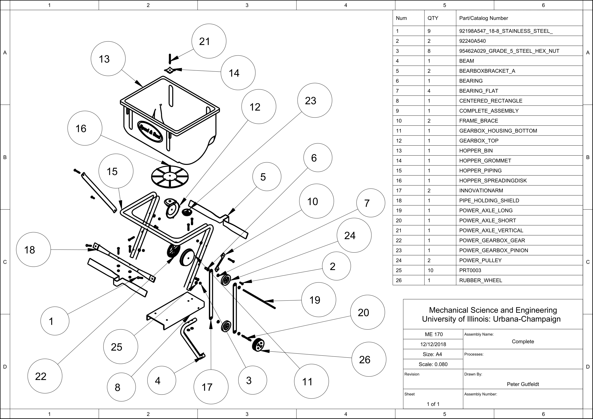
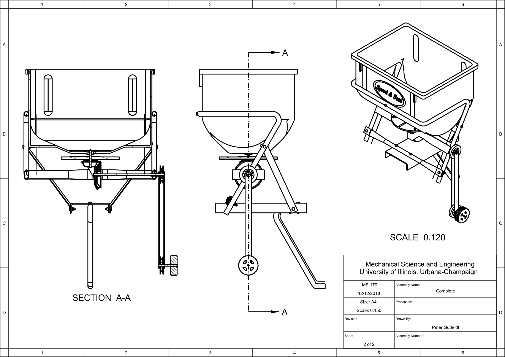
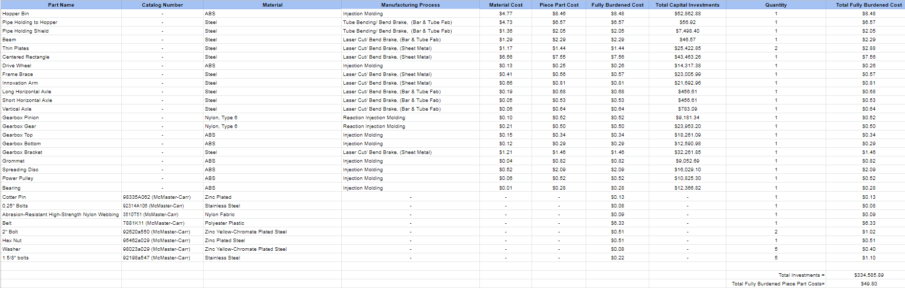

This course teaches the primary methods and principles used by engineers today to define and describe the geometry and topology of engineered components. In this course, we learned how to create fully defined engineering models and how to correctly present them in standard 2D blueprint form (aka Engineering Drawings), 3D wireframe, 3D cosmetically shaded presentations and animations, meshed topologies for engineering analysis, and toolpath generation for component manufacture. PTC’s Creo 3D CAD software was used to accomplish these tasks.
The goal of this project was to design a new mechanical or electro-mechanical product. The product had to have several moving parts (i.e. a mechanism) and be our own design. It also had to have something new or different about it; as innovation was a portion of the grade.
My team designed a commercial grade seed spreader. The spreader is designed to hitch onto the back of a residential lawn tractor in order to efficiently distribute as seed, fertilizer, and other gardening material across a lawn. Current models that attach to a lawn tractor are powered either by a wheel that rolls on the ground or by a motor connected to the tractor’s battery. These designs pose problems such as incomplete spreading patterns and strain on batteries that may not be reliable. This spreader fixes these problems by stabilizing the rotating degree of freedom during turns and powering the spreader mechanically off of the tractor wheel’s rotation. The tractor wheel turns while it drives, spinning the wheel extended from the seed spreader. This wheel spins a belt which powers the gearbox turning the spreading disk. The hopper bin funnels fertilizer down to the spreading disk as the tractor drives. The hopper is attached to a standard hitch on the lower back of the tractor and is strapped to the driver’s chair to ensure no rotation. This device requires only standard tools to put together and is easy to set up.
Our design incorporated around 30 unique parts. The engineering drawings of our assembly can be seen below. Engineering drawings for our parts can be found in our report.
 We used aPriori to develop material, manufacturing, and tooling cost estimates for our designed parts. Our total fully burnedned piece part cost was $49.80. Current seed spreaders that are comparable to our design range from $100-$300, so this manufacturing cost is reasonable.
The full report can be viewed below. This report includes 1.Product Description including ideation process, 2. Concept Sketches – initial and finalized, 3. Concept Selection Process (Pugh Matrix), 4. Product Design Specification (PDS), 5. CAD Models – Part and Assembly Models, 6. Assembly Drawing with Cross-Sections, 7. Exploded Assembly Drawing with Bill of Material (BOM), 8. Detailed Engineering Part Drawings fully dimensioned with tolerances, 9. Tolerance Analysis, 10. Materials and Manufacturability.